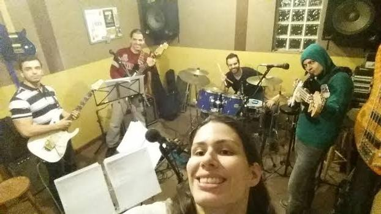

The Evolution Enterprise Application Architecture - Oziel Moreira Neto
Lembra de quando se usava J2EE? Que se usava muito Struts? Quase tudo na internet rodava em PHP e MySQL?
O Oziel estava lá, e mais importante ele está na linha de frente hoje. Ele vai contar o que existe de melhor arquitetura agora no mundo de IoT, e onde aplicações rodam em nuvem, com vários deploys por dia, usando base de dados semi-estruturadas, grandes volumes de dados ou respondem para dispositivos móveis.
 Back
Back
Time is Money and so is data: An analysis of the long-term retention of Big Data - Phillip Viana
Alguns documentos precisam ser guardados por muitos anos, as vezes até por toda a vida de um cliente. Alguns documentos do governo não podem ser apagados.
Phillip mostra como solucionar o problema de manter estes documentos mostrando toda uma arquitetura para long-term retention.
 Back
Back
Programação Neurolinguística: Hipnose - Grazielle Codogno
Framework desenvolvido no auxilio da comunicação interna e externa, trabalhada diretamente ao inconsciente do cerebro. Hipnose é uma das suas técnicas ,e a que causa muita polêmica.
 Back
Back
Automation for Beginners / Tips for Experts - Alessandra Lima
Automação de teste é o processo de escrever um programa de computador para fazer testes no qual, sem isso, seria feito manualmente. Uma vez que os testes estão automatizados, eles podem rodar rapidamente e repetidamente. E qual ferramenta e técnica poderíamos usar que é frequentemente o mais efetivo em termos de custo para produtos de software que têm um ciclo de manutenção longo?
 Back
Back
Openstack: Conheça a nuvem por dentro - Mauro Rodrigues
A plataforma Openstack, um projeto open source suportado pela IBM e por outras grandes empresas. Oferece uma sólida base de construção para o futuro de da computação em cloud para IaaS. Temos um time dedicado a este fantástico projeto, conheça seu trabalho.
 Back
Back
Columnar Analytics with IBM DB2 BLU - Eluizio Barretto
O novo DB2 10.5 oferece entre outras novidades a capacidade de armazenar dados colunares com grande performance. Entenda a tecnologia por trás do DB2 BLUE e veja as novas possibilidades.
 Back
Back
Functional Programming on the JVM with Clojure – Lab UK - Thomas van der Veen
Hoje as linguagens dominantes são as Orientadas a Objeto e Imperativas, que tornam difícil o trabalho em aplicações multi-thread. O futuro está em linguagens de Programação Funcionais! Entenda este paradigma e conheça essa poderosíssima linguagem the roda na JVM e veja como ela se integra no ecosistema Java.
 Back
Back
Smarter Planet: Solução Sustentável para Prédios Inteligentes - Bruno Garcia e Gustavo Cardoso
A preocupação com o meio ambiente e recursos naturais vem aumentando nos últimos anos. Venha conhecer como uma boa solução pode ser aplicada para monitorar e reduzir o consumo de água e de energia elétrica de um condomínio.

 Back
Back
Introdução a Bootstrap e AngularJS - Alexandre Quinteiro, Leucir Marin e Marcelo Blechner
Há alguns anos que a indústria de software tem se voltado a frameworks extremamente produtivos para criação de interfaces. Onde o código gerado funciona em um browser de computador ou dispositivo móvel. O time que está usando essas tecnologias pretende compartilhar seu conhecimento.
AngularJS é um framework JavaScript open-source, mantido pelo Google, que auxilia na execução de single-page applications. Como todo framework aumenta a produtividade e resolve problemas que de outra forma demoraríamos pra resolve


 Back
Back
Aprendizado de Máquina - Thiago Bianchi
Data crunchers ou profissionais de Analytics/Aprendizado de máquina estão entre as carreiras mais quentes no mundo e esta tendência deve continuar. Entenda princípios básicos e poderosos desta área com nosso colega.
 Back
Back
Kepner-Tregoe (KT) - Renato Barbieri
Como resolver um problema de uma área que você não conhece? Como ser mais assertivo na hora de achar a causa de um problema?
Venha conhecer um pouco mais do método de resolução de problemas chamado KT, desenvolvido pela consultoria Kepner-Tregoe e descubra como!
 Back
Back
Painel: What is the future of Software Testing? - Helena Corelli
Um Painel com perguntas tendo esse tópico como tema central da discussão entre o pessoal de Quality
 Back
Back
Princípios básicos sobre tipografia - Leandro Cassa
Veja nosso colega cobrir séculos de história e conhecimento em nessa conversa rápida sobre tudo que você já leu até hoje
 Back
Back
Social Trending Analytics - FAMA - Maisa Aparecida Penha Gemignani
Você ouviu falar sobre análise de sentimento este ano durante a copa? Saiba mais sobre como foi feita esta operação que coletou dados de redes sociais pra analisar como o brasileiro se sentiu durante a copa e surpreenda-se!
Saiba o tamanho da operação para este novo produto que identifica informações a partir de redes sociais
 Back
Back
Gerenciamento de Tempo (Pomodoro) - Rafael Sene
Venha conhecer uma nova técnica de gerenciamento de tempo para melhorar sua performance no trabalho.
Saiba como gerenciar melhor o seu tempo e conheça uma metodologia de grande sucesso.
 Back
Back
Porque usar o Rational Clear Case? - Marcio Jacinto Albernaz
Você deve estar se perguntando porque ainda utilizar o Rational Clear Case. Nesta palestra, você descobrirá as vantagens do Clear Case sobre os seus principais concorrentes e os motivos pelos quais muitos clientes não utilizam outras ferramentas.
 Back
Back
Power KVM - Murilo Opsfelder
Saiba mais sobre o produto da IBM que provê virtualização para Linux systems baseado em POWER 8.
 Back
Back
Big Data needs Big Analytics - Rogério Barbosa
Quer saber como se tornar um expert em Analytics? Não perca a palestra do Rogério! Ele é um dos pioneiros em Analytics no Laboratório.
 Back
Back
How is on the Head, What is on the Heart! 15 min may change your mind - Diego Duarte Moreira
Vamos refletir um pouco sobre o poder de nossa cabeça sobre nosso corpo.
 Back
Back
Carreira Gerencial - Cleber Neumann
Saiba quais devem ser seus próximos passos para seguir a carreira gerencial. Cleber também falará sobre sua própria experiência.
 Back
Back
Watson - Fábio Scopeta Rodrigues
Entenda como esta tecnologia revolucionária de computação cognitiva da IBM funciona, descubra onde ela pode ser aplicada e porque ela está no futuro da IBM.
 Back
Back
Implementando Continuous Delivery - Rodrigo Braga
Nosso colega vem demonstrar quais são os avanços, desafios vencidos e a vencer na adoção do processo.
 Back
Back
O valor estratégico de CAMSS para as empresas e como a mobilidade mudou todas as regras do jogo - Avi Alkalay – TLC
Veja a importância de CAMSS (Cloud Analytics Mobile Social And Security) para as empresas atualmente e o impacto causado pelas tecnologias móveis.
 Back
Back
A Importância de participar do TLC na carreira técnica - Agostinho de Arruda Villela – TLC
Agostinho é mebro do TLC-BR (Technical Leadership Council) e falará sobre como o TLC pode alavancar sua carreira técnica.
 Back
Back
Virtualization in a DevOps Era - Marco Shimomoto
Veja como você pode se tornar mais produtivo usando os novos produtos open source mais comentados do momento. Docker containers poderosos: a empresa idealizadora do projeto já angariou USD 7BI (inclusive da IBM). Vagrant para coordenar ciclo de vida de ambientes virtualizados. Ansible, um configuration manager leve (agent-less) e diferente (idempotent).
 Back
Back
Inteligência e Estratégias de Cubo Mágico - Rafael Cinoto
Você sabia que o cubo mágico (ou cubo de Rubik) fez 40 anos este ano?
O TechDay traz uma pessoa que sabe tudo de cubo mágico pra mostrar mais deste mundo pra vocês, e ainda terá uma competição pra ver quem monta o cubo mais rápido!
 Back
Back
Em Sua Estréia a Software Lab Band faz sua primeira e exclusiva apresentação no TechDay 2014
Repertorio : Rock Internacional
Integrantes: Leandro Cassa, Grazi Codogno, Silvia Altieri, Gabriel Ribeiro, Ely Barros, Sergio Person, Guilherme Lopes, Eli Silva
Após um dia cheio de palestras interessantes venha confraternizar e comemorar curtindo a lab band tocando um repertório especial pro TechDay! =]

Back